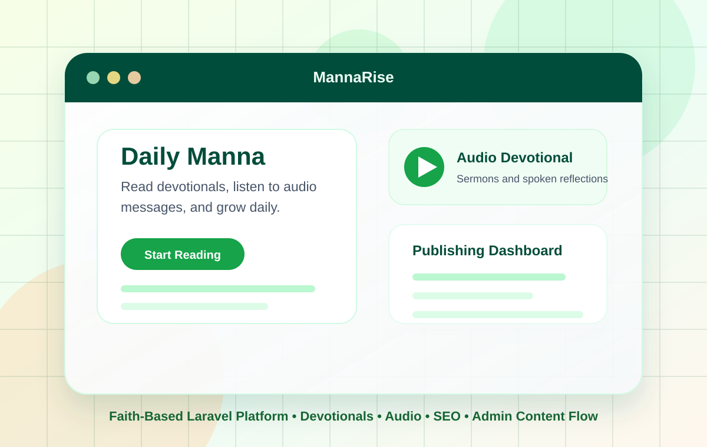

Websites
Professional, responsive websites for businesses, organisations, schools, media brands and personal brands.
Full-Stack Web Developer · Laravel / PHP · EdTech
I design and develop reliable websites, business systems, dashboards and custom applications for schools, organisations, media teams and growing businesses.
From a new product built from scratch to an existing Laravel application that needs fixing, improving or taking further—I can help.

The real problem
It needs software that works.
Maybe your school is still managing important processes manually. Maybe your organisation has an outdated website that no longer represents the quality of its work.
Maybe your team relies on spreadsheets, disconnected tools, or a system that has become difficult to maintain. Or perhaps an existing Laravel application needs someone who can understand the codebase and make it better.
That’s where I come in. I turn business requirements into practical digital products—from public websites to the dashboards, workflows, databases and internal systems that keep organisations running.
Tell me what you’re building →What I build
Focused systems for public communication, daily operations and long-term product growth.
Professional, responsive websites for businesses, organisations, schools, media brands and personal brands.
Custom platforms built around your workflows, users, data and business requirements.
School websites, portals, result systems, learning platforms, CBT and administrative tools.
Dashboards, admin panels, internal tools, databases, workflows, reports and operational platforms.
New applications, features, performance improvements, bug fixes, integrations and existing codebases.
Deployment, maintenance, technical improvements, updates, troubleshooting and long-term support.
Selected work
A selection of products and platforms across education, media, health, finance, faith and digital learning.

A digital platform for a Nigerian radio station supporting its online presence, content publishing, audience engagement and digital operations.

Public health information connected with outreach operations, volunteers, partnerships, secure accounts, role-based dashboards and administration.

A school website and management platform supporting records, results, report cards, payments, CBT, e-learning, announcements and administration.

A professional web presence designed around credibility, accessibility, responsiveness and digital visibility for a financial institution.

A project-based technology learning platform designed around practical learning, structured courses, career development and learner progression.

A Laravel-powered platform for publishing devotionals, audio content and accessible spiritual resources.
Why work with me
A good product is not a collection of screens. It needs reliable logic, sensible data, understandable experiences and a maintainable path after launch.
Understand what the system needs to accomplish before choosing how to build it.
Reliable application logic, databases, authentication, APIs and workflows.
Responsive interfaces that remain clear, usable and consistent.
Prepare products for production and help keep them working afterwards.
Clear starting prices
Detecting your local currency…
Prices are converted from base Nigerian naira rates using current exchange rates. Converted values are estimates; final pricing is confirmed after scope and requirements are agreed.
Process
Focused stages, direct communication and useful checkpoints from the first conversation onward.
Start with the problem, users, existing context and what success means.
Define scope, priorities, technology, milestones and expectations.
Develop in focused stages with progress updates and feedback.
Test, prepare, deploy and hand the finished product over properly.
Continue with maintenance, features, optimisation and support.
About
I’m Oyetoke Adedayo Ebenezer, a full-stack web developer based in Akure, Nigeria.
My work centres on Laravel, PHP, Livewire, Vue.js, React.js, Tailwind CSS, JavaScript, MySQL and modern web application development. I’ve worked across education, media, healthcare, finance, faith-based content and business operations.
My background in Industrial Mathematics shaped how I approach problems: understand the structure, break it down, find a practical solution and build it properly. I care about more than writing code—I care whether the software helps people do their work better.
More about me →Technical expertise
Laravel and PHP lead the stack. Supporting tools are chosen for the product, not for a logo wall.
Insights
A home for practical writing about the technologies, problems and decisions behind real applications.
Planned category
Planned category
Planned category
Planned category
Planned category
Frequently asked
Yes. I’m based in Nigeria and work remotely with clients, organisations, startups and teams internationally.
Business websites, Laravel applications, school systems, dashboards, portals, internal tools, content platforms, APIs and custom digital products.
Yes. I work with existing Laravel codebases for debugging, feature development, maintenance, optimisation and modernisation.
Yes. A project can move from requirements and architecture through development, testing, deployment and post-launch support.
Have a problem worth solving?
Tell me what you’re trying to build, improve or fix. You don’t need a perfect specification before contacting me.
25% to start · 25% at milestone · 50% at completion
Akure, Nigeria · Available for remote projects worldwide